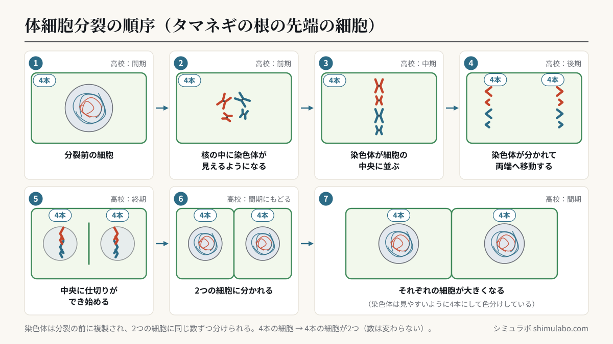
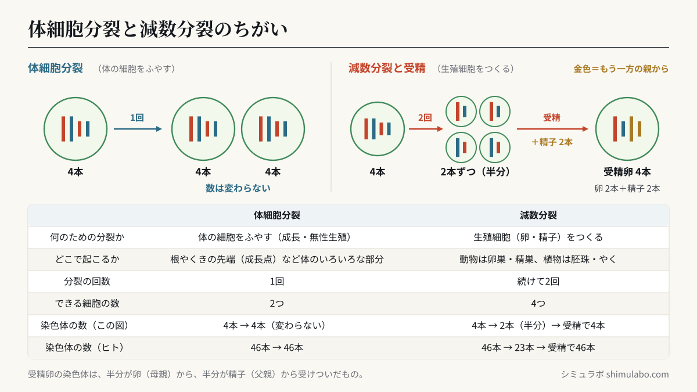

このシミュレーションでわかること
中学3年 第2分野（5）生命の連続性「生物の成長と殖え方」（細胞分裂と生物の成長／生物の殖え方）の内容です。学習指導要領の解説では、体細胞分裂の観察を行って順序性を見いだすこと、染色体が複製されることに触れること、映像などを活用して染色体の動きを見せることが示されています。このシミュレーションは、その「染色体の動き」を段階ごとに止めたり、動かしたりして見られるようにしたものです。
授業での使い方
- 導入：「顕微鏡で見た根の先端」に切り替え、A・B・Cの場所をタップして見くらべます。「根はどこでのびているのだろう」「細胞の大きさや形がちがうのはなぜだろう」と問いかけます。根に等間隔の印をつけて育てると、先端に近い部分の間隔が大きく広がることとも結びつけられます。
- 展開：タマネギの根の先端の観察（下の手順）の前に「体細胞分裂」の①〜⑦を再生し、どんな形の細胞を探せばよいかを確かめます。観察のあとは、スケッチした細胞が①〜⑦のどれに当たるかを話し合い、分裂の順番に並べます。顕微鏡の図の細胞をタップすると、その細胞の段階が表示されます。
- まとめ：「減数分裂と受精」に切り替え、染色体の数が「4本 → 2本 → 受精で4本」と変わることを体細胞分裂（4本 → 4本）とくらべます。有性生殖では子が両親から半分ずつ染色体を受けつぐこと、次の「遺伝の規則性と遺伝子」につながることを確かめます。
生徒への問いの例：
- 体細胞分裂の前に、染色体が複製されて2倍になっておくのはなぜだろう。
- タマネギの根の先端で、分裂している細胞が多いのはどのあたりだろう。根元に近いところとくらべて、細胞の大きさはどうちがうだろう。
- 減数分裂で染色体の数が半分にならなかったら、受精卵の染色体の数は、代を重ねるごとにどうなってしまうだろう。
しくみ・解説






図はタップすると大きく表示されます。授業のプリント・スライド・板書計画に自由に使えます（出典「シミュラボ」とページのURLを添えてください）。
用語の意味
- 細胞分裂とは、1つの細胞が2つの細胞に分かれることです。
- 体細胞分裂とは、体をつくる細胞（体細胞）が数を増やすときの細胞分裂で、分裂後の細胞の染色体の数はもとの細胞と同じです。
- 染色体とは、細胞分裂のときに核の中に見えるひものようなもので、遺伝子をふくみます。生物の種類によって数が決まっています。
- 減数分裂とは、生殖細胞（卵・精子、植物では卵細胞・精細胞）がつくられるときの特別な細胞分裂で、染色体の数がもとの細胞の半分になります。
- 受精とは、卵（卵細胞）の核と精子（精細胞）の核が合体することで、受精卵の染色体の数は親の体細胞と同じになります。
- 成長点とは、根やくきの先端近くにある、細胞分裂がさかんに行われている部分です。根の成長点は、先端をおおう根冠に守られています。
体細胞分裂の順序（中学の言い方と高校の言い方）
| 中学の教科書の言い方 | 高校（生物基礎）の言い方 | 染色体・細胞のようす | |
|---|---|---|---|
| ① | 分裂前の細胞 | 間期 | 核がある。染色体は細い糸のように広がっていて見えにくい。分裂の前に複製されて2本ずつになる |
| ② | 核の中に染色体が見えるようになる | 前期 | 核の形が見えなくなり、染色体が太く短くなって見える（複製された2本がくっついた形） |
| ③ | 染色体が細胞の中央に並ぶ | 中期 | 染色体が細胞の中央（赤道面）に並ぶ |
| ④ | 染色体が2つに分かれて両端へ移動する | 後期 | 複製されていた染色体が分かれ、同じ数ずつ両端（両極）へ移動する |
| ⑤ | 中央に仕切りができ始める | 終期 | 両端に新しい核ができ始め、植物の細胞では中央に仕切り（細胞板）ができる |
| ⑥ | 2つの細胞に分かれる | （間期にもどる） | もとの細胞と同じ数の染色体をもつ2つの細胞ができる |
| ⑦ | それぞれの細胞が大きくなる | 間期 | 分裂でできた細胞が、もとの大きさまで大きくなる |
動物の細胞では、仕切りができる代わりに、細胞のまん中がくびれて2つに分かれます。前期・中期・後期・終期という呼び方は、高校の「生物基礎」で学びます。
染色体の数の早見表
染色体の数は生物の種類ごとに決まっています。体細胞分裂では数が変わらず、減数分裂でできる生殖細胞では半分になり、受精でもとにもどります。
| 生物 | 体細胞の染色体 | 生殖細胞の染色体（減数分裂） | 受精卵の染色体 |
|---|---|---|---|
| ヒト | 46本 | 23本 | 23本＋23本＝46本 |
| タマネギ | 16本 | 8本 | 8本＋8本＝16本 |
| エンドウ | 14本 | 7本 | 7本＋7本＝14本 |
| ソラマメ | 12本 | 6本 | 6本＋6本＝12本 |
| イネ | 24本 | 12本 | 12本＋12本＝24本 |
| キイロショウジョウバエ | 8本 | 4本 | 4本＋4本＝8本 |
| イヌ | 78本 | 39本 | 39本＋39本＝78本 |
| ネコ | 38本 | 19本 | 19本＋19本＝38本 |
| このシミュレーションの生物 | 4本 | 2本 | 2本＋2本＝4本 |
体細胞分裂と減数分裂のちがい
| 体細胞分裂 | 減数分裂 | |
|---|---|---|
| 何のための分裂か | 体の細胞をふやす（成長・無性生殖） | 生殖細胞（卵・精子）をつくる |
| どこで起こるか | 根やくきの先端（成長点）、体のいろいろな部分 | 動物は卵巣・精巣、植物はめしべの胚珠・おしべのやく |
| 分裂の回数 | 1回 | 続けて2回 |
| できる細胞の数 | 2つ | 4つ |
| 染色体の数（このシミュレーション） | 4本 → 4本（変わらない） | 4本 → 2本（半分）→ 受精で4本 |
減数分裂では、同じ形・大きさの染色体どうしが対になって並び、対の染色体が1本ずつ別々の細胞に入ります。そのため、生殖細胞は対の染色体を1本ずつもちます。このシミュレーションの赤と青は、その生物が自分の両親から1本ずつ受けついだ染色体を表し、緑は受精の相手（もう一方の親）から来た染色体を表しています。中学では、減数分裂のくわしい過程（2回の分裂）までは扱わず、「染色体の数が半分になる」ことを学びます。
タマネギの根の先端の観察の手順
| 操作 | 目的 | |
|---|---|---|
| 1 | タマネギの種子（または鱗茎の底）を水につけて根を出させ、根の先端を約5mm切り取る | 細胞分裂がさかんな先端付近を観察するため |
| 2 | うすい塩酸に入れて、約60℃の湯で数分あたためる（時間は教科書の指示に従う） | 細胞どうしの結合を切り、細胞を1つ1つ離れやすくするため |
| 3 | 根を水でよくすすぎ、スライドガラスにのせて、柄つき針で軽くほぐす | 塩酸を取りのぞき、染色液がしみこみやすくするため |
| 4 | 酢酸オルセイン液（または酢酸カーミン液）を1滴落とし、数分おく | 核や染色体を赤紫色（酢酸カーミンは赤色）に染めて見やすくするため |
| 5 | カバーガラスをかけ、ろ紙をのせて、指の腹で真上から静かに押しつぶす（ずらさない） | 細胞の重なりをなくし、1層に広げるため |
| 6 | 顕微鏡の低倍率で先端付近を探してから、高倍率（400〜600倍）で観察する | 分裂中の細胞を見つけ、染色体のようすを観察するため |
根はどこでのびるのか（成長点）
根の先端付近（A）には小さな細胞がすき間なく並び、分裂の途中の細胞が多く見られます。少し上（B）や根元に近いところ（C）では、分裂している細胞はほとんどなく、細胞が縦に長く大きくなっています。生物の成長は、細胞分裂で細胞の数が増えることと、分裂でできた細胞が大きくなることによって起こります。
発展：細胞周期（高校 生物基礎）
分裂を終えた細胞が次の分裂を終えるまでの1回りを細胞周期といいます。細胞周期は、分裂の準備をする間期と、分裂が進む分裂期（前期・中期・後期・終期）に分けられ、DNA（染色体）の複製は間期に行われます。細胞周期の大部分は間期なので、根の先端を見ても、分裂期の細胞は一部です。高校では、それぞれの時期の細胞の数の割合から、各時期にかかる時間の長さを推定する実習も行います。
参考
- 文部科学省「中学校学習指導要領（平成29年告示）」理科 第2分野（5）生命の連続性（ア）（ｱ）生物の成長と殖え方／「中学校学習指導要領（平成29年告示）解説 理科編」（体細胞分裂の観察、染色体の複製、減数分裂）
- 文部科学省「平成29・30・31年改訂学習指導要領（本文、解説）」
- 文部科学省「高等学校学習指導要領（平成30年告示）解説 理科編」生物基礎（細胞周期とDNAの複製）
- 中学校理科の教科書（第3学年）「生物の成長と殖え方」（タマネギの根の体細胞分裂の観察）
引用・転載について
本ページのシミュレーション結果・数値は、出典を明記いただければブログ・ニュース記事・SNS・授業や社内資料への引用を歓迎します。事前連絡は不要です。
出典：シミュラボ「細胞分裂シミュレーター（体細胞分裂・減数分裂と受精）」 https://shimulabo.com/sims/saibou-bunretsu/よくある質問
- 体細胞分裂とは何ですか？
- 体をつくる細胞（体細胞）が数を増やすときの細胞分裂です。分裂の前に染色体が複製され、2つの細胞に等しく分けられるので、分裂後の細胞の染色体の数はもとの細胞と同じです。
- 体細胞分裂はどんな順番で進みますか？
- ①分裂前の細胞（染色体が複製される）→②核の中に染色体が見えるようになる→③染色体が細胞の中央に並ぶ→④染色体が2つに分かれて両端へ移動する→⑤中央に仕切りができ始める→⑥2つの細胞になる、の順です。高校では②〜⑤を前期・中期・後期・終期と呼びます。
- 体細胞分裂と減数分裂のちがいは何ですか？
- 体細胞分裂は体の細胞をふやす分裂で、染色体の数は変わりません。減数分裂は卵や精子などの生殖細胞をつくる分裂で、染色体の数が半分になります。受精すると、受精卵の染色体の数はもとにもどります（ヒトでは23本＋23本＝46本）。
- タマネギの根の先端を観察するのはなぜですか？
- 根の先端近くには細胞分裂がさかんな成長点があり、分裂の途中の細胞がたくさん見つかるからです。また、植物の細胞は染色体の数が少なく見やすいものが多く、タマネギの根は手に入れやすく、簡単に育てられます。
- 塩酸と酢酸オルセイン液は何のために使うのですか？
- あたためたうすい塩酸は、細胞どうしの結合を切って細胞を離れやすくし、押しつぶしたときに細胞が重ならないようにするために使います。酢酸オルセイン液は、核や染色体を赤紫色に染めて見やすくするために使います。
- 生物はどのようにして成長するのですか？
- 細胞分裂で細胞の数が増えることと、分裂でできた細胞の1つ1つが大きくなることによって成長します。タマネギの根では、先端付近で分裂した細胞が、根元に向かうにつれて縦に長くなっていきます。